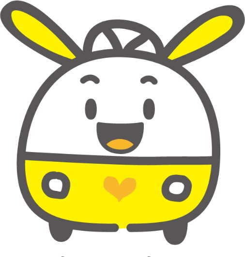
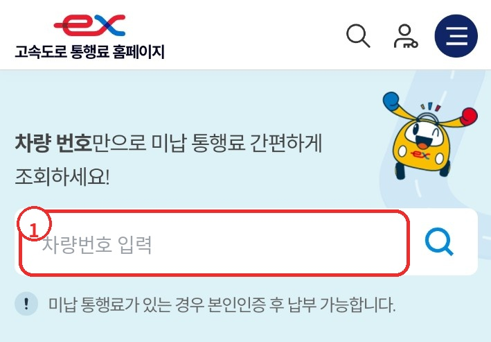
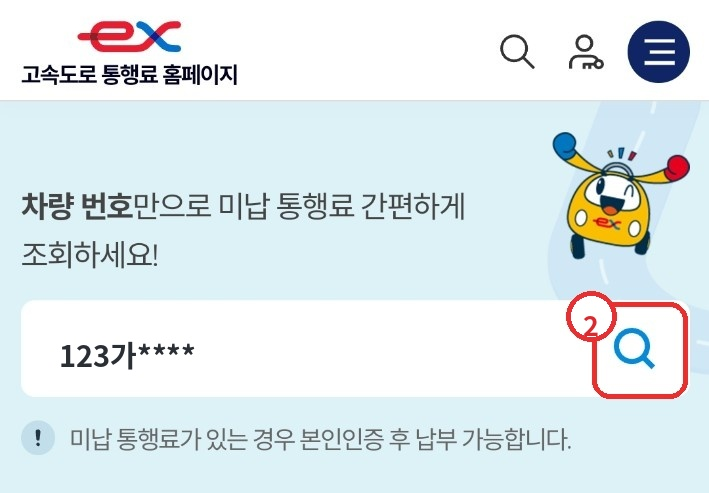
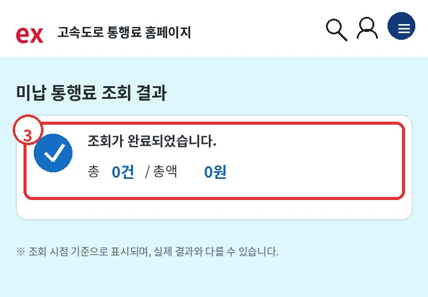
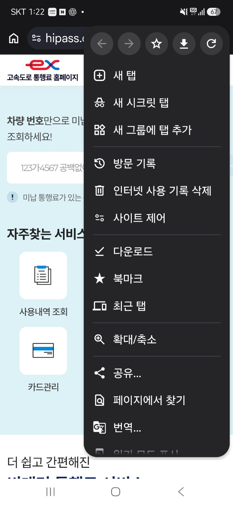
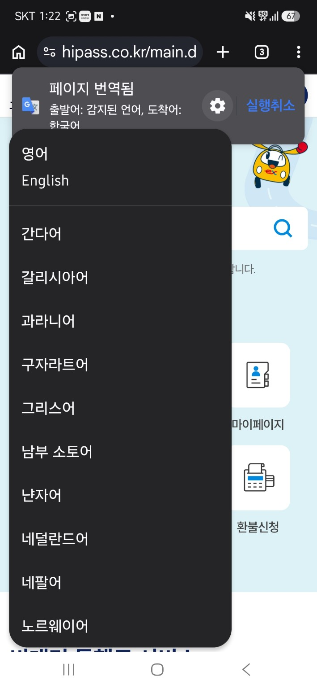
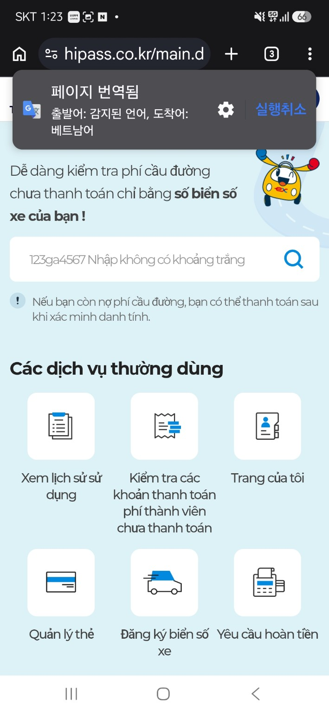

외국인을 위한 미납통행료 조회·납부 안내
하이패스 홈페이지 이용방법 및 납부안내 연락처를 안내합니다.
한국어 · English · 中文 · Tiếng Việt · Русский · ไทย · O‘zbekcha · नेपाली · Bahasa Indonesia

비회원도 첫 화면에서 미납 여부를 간단히 조회할 수 있습니다.

첫 화면 입력창에 차량번호를 공백 없이 입력합니다.
숫자는 휴대폰 숫자키패드로 입력하고, 번호판의 한글은 아래 버튼에서 선택하세요.

차량번호 입력창 오른쪽의 돋보기 버튼을 눌러 미납 여부를 조회합니다.

조회된 미납 건수와 금액을 확인합니다. 화면은 개인정보가 포함되지 않은 안내용 예시입니다.
비회원·외국인은 조회 후 납부안내 연락처 또는 가까운 한국도로공사 영업소를 이용할 수 있습니다.
하이패스 홈페이지가 한국어로 표시될 때 브라우저 번역 기능을 이용하세요.
오른쪽 위의 ⋮ 메뉴를 누릅니다.

메뉴에서 번역 기능을 선택합니다.

원하는 언어를 선택하면 페이지가 번역됩니다.

온라인 이용이 어려운 경우 아래 방법으로 납부 안내를 받을 수 있습니다.
온라인 이용이 어렵거나 미납 발생 일시·이용구간 등 상세 확인이 필요한 경우 가까운 영업소를 방문하세요.
미납통행료와 관련해 알아둘 내용을 확인하세요.